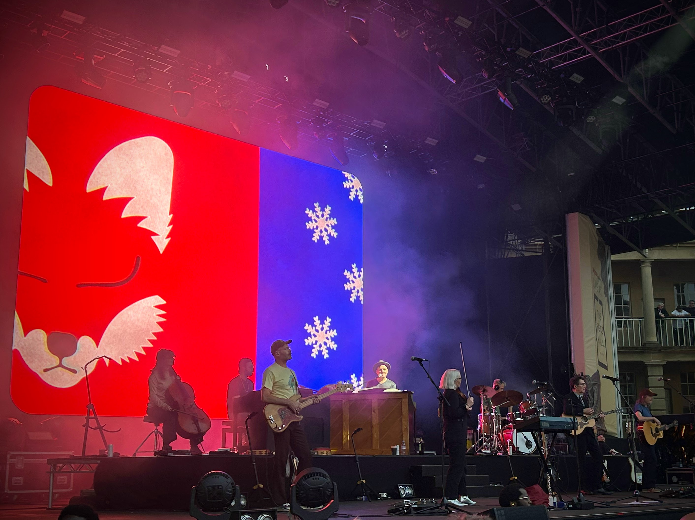
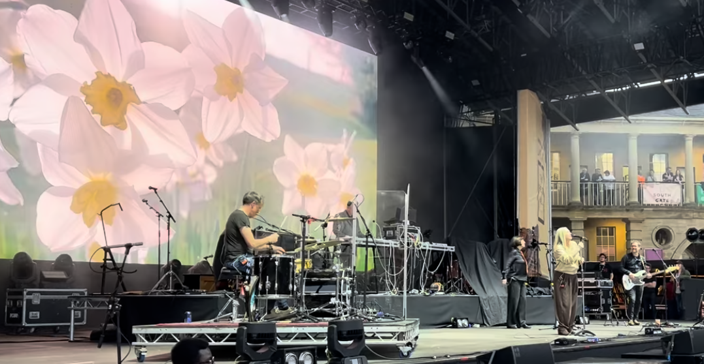
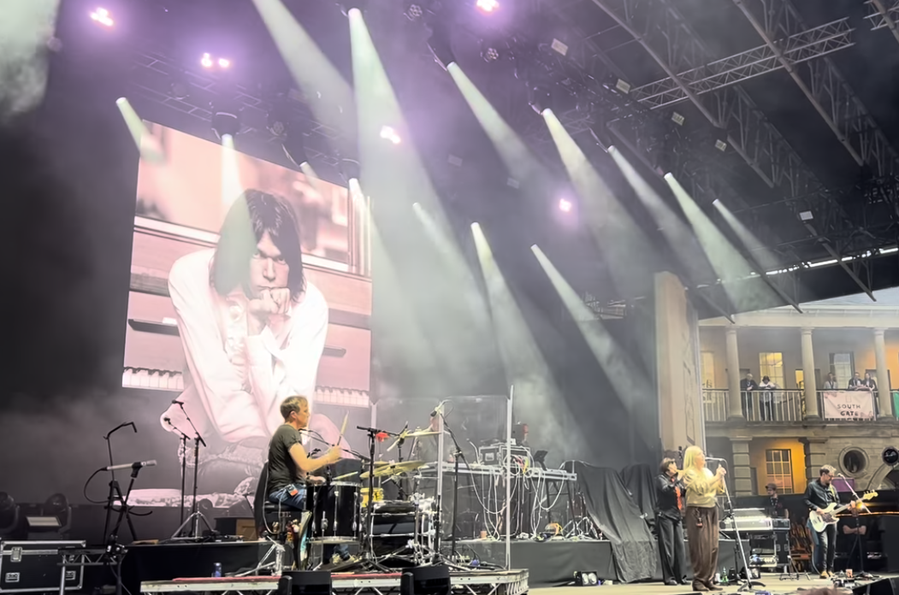
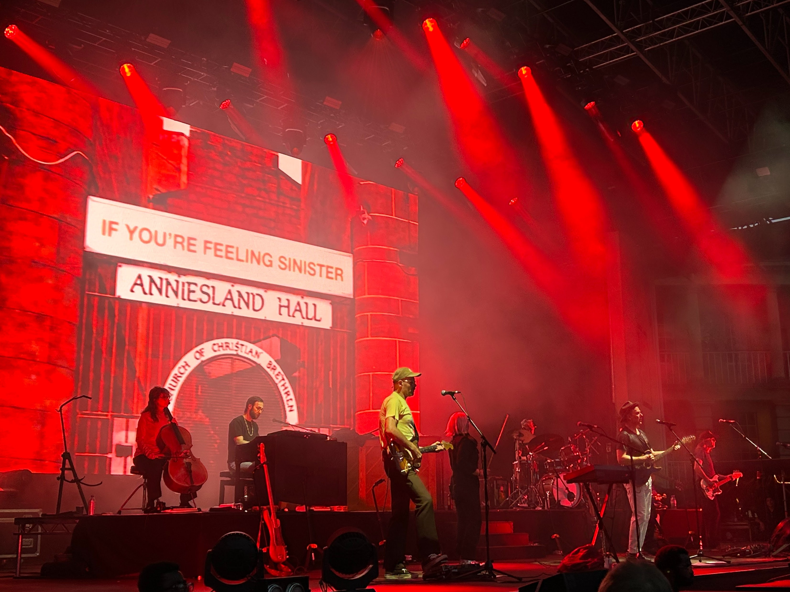
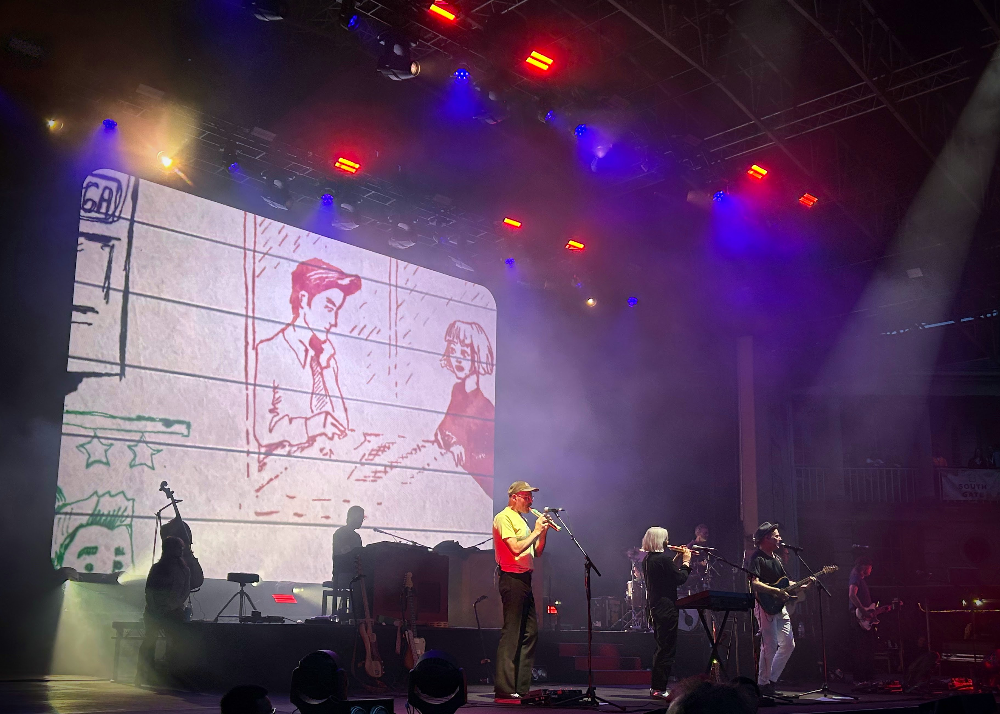
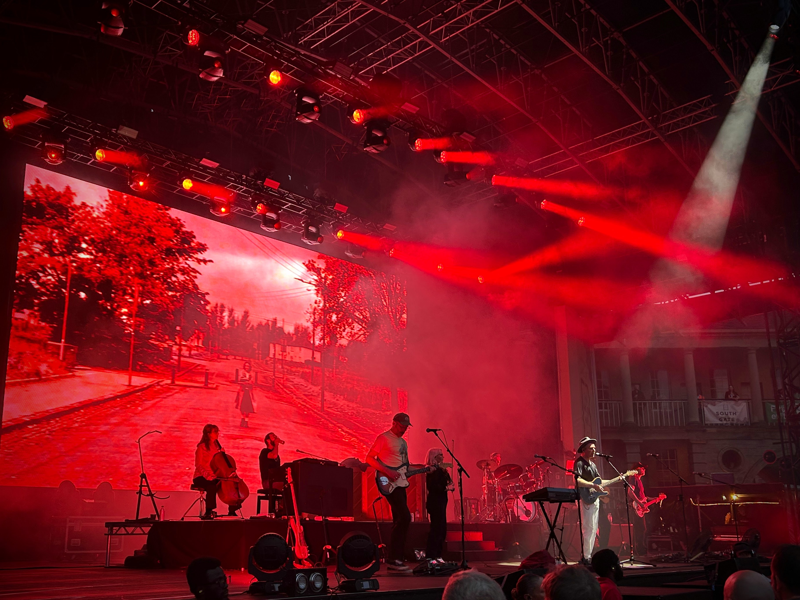
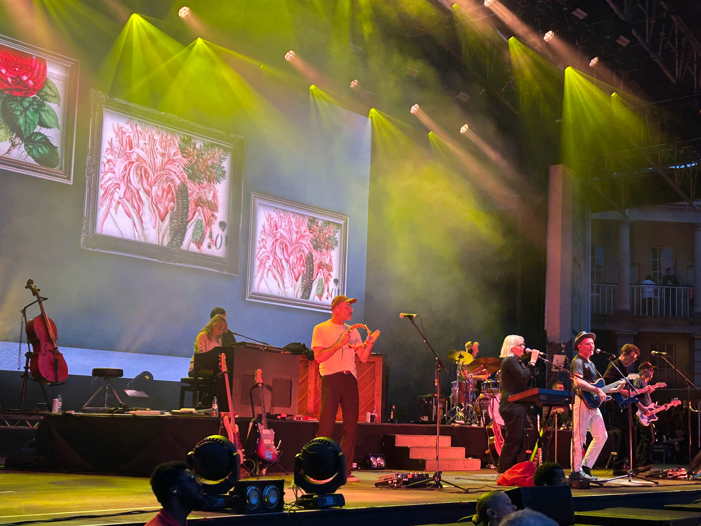

A father-daughter evening at The Piece Hall, Halifax, with indie memories echoing beautifully around the courtyard.

Some venues do half the emotional work before a note has been played. The Piece Hall in Halifax is one of them. You walk into that great open courtyard, surrounded by stone and history, and the evening immediately feels less like a standard gig and more like a gathering inside a memory.
Seeing Belle and Sebastian there with my daughter, and with Saint Etienne as guests, felt beautifully right. It was another of those musical handovers that never quite run in a straight line. Some of the songs belonged to my past, some were becoming part of hers, and the venue seemed to hold both without asking us to choose.
Saint Etienne brought a rush of early nineties feeling with them: the smartness, the softness, the metropolitan daydream of Foxbase Alpha, and the way a song title like London Belongs to Me can still open a little door in the mind. Not nostalgia exactly, or not only nostalgia. More the sensation of meeting a younger version of yourself in the crowd and finding you are still rather fond of him.


Then Belle and Sebastian arrived with that particular mixture of wit, tenderness and melancholy that they do so well. Hearing If You're Feeling Sinister in that setting was quietly wonderful: intimate music somehow made communal by thousands of people standing together in the open air.

There is something very moving about sharing music with your child when the music has already carried you through several earlier versions of yourself.
I have always loved the way indie music can make small feelings feel important. Not inflated or melodramatic, just properly noticed. Belle and Sebastian have built a world out of that: awkwardness, kindness, humour, longing, and all the tiny emotional weather systems that gather around ordinary lives.


Watching my daughter take it in beside me made the evening feel larger than a setlist. It became one of those gentle father-daughter moments where nothing much needs to be said. The music does the talking. The place does the holding. You simply stand there together and let it become part of the family archive.

I came away thinking that music is one of the kindest ways generations speak to each other. We lend each other songs, venues, stories and associations. Some are handed down; some are handed back. And occasionally, under a summer sky in a courtyard in Halifax, they all seem to arrive at once.
– Stuart Leach